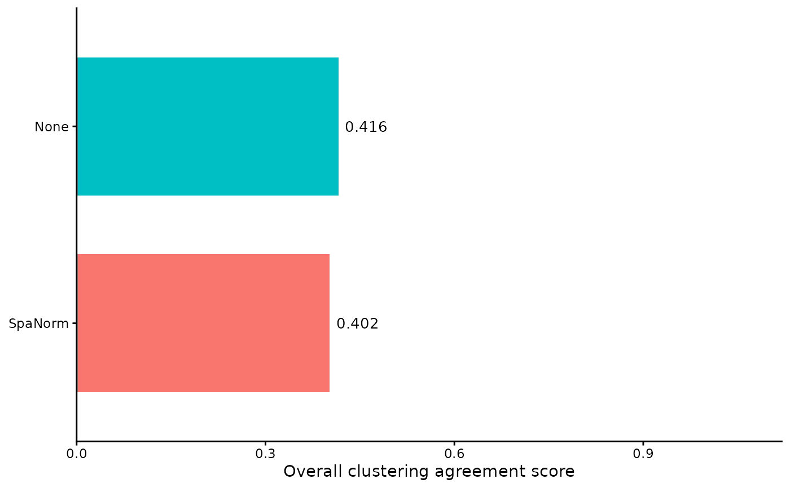

Display overall clustering agreement scores across normalisation methods.
Usage
plot_normalization_ranking(
ranking_df,
bar_width = 0.7,
palette = NULL,
label_size = 3.5,
show_values = TRUE,
theme_name = "classic"
)Examples
data(norm_example)
banksy_norm <- run_banksy_individual(
norm_list = norm_example,
seed = 123
)
#> Computing neighbors...
#> Spatial mode is kNN_median
#> Parameters: k_geom=15
#> Done
#> Done
#> Using seed=123
#> Using seed=123
#> Computing neighbors...
#> Spatial mode is kNN_median
#> Parameters: k_geom=15
#> Done
#> Done
#> Using seed=123
#> Using seed=123
metrics_df <- calculate_clustering_metrics(
norm_list = banksy_norm,
ground_truth_col = "layer_guess"
)
ranking_df <- rank_normalization_methods(
metrics_df = metrics_df
)
p <- plot_normalization_ranking(
ranking_df = ranking_df,
bar_width = 0.7,
label_size = 3.5,
theme_name = "classic"
)
p$plot
